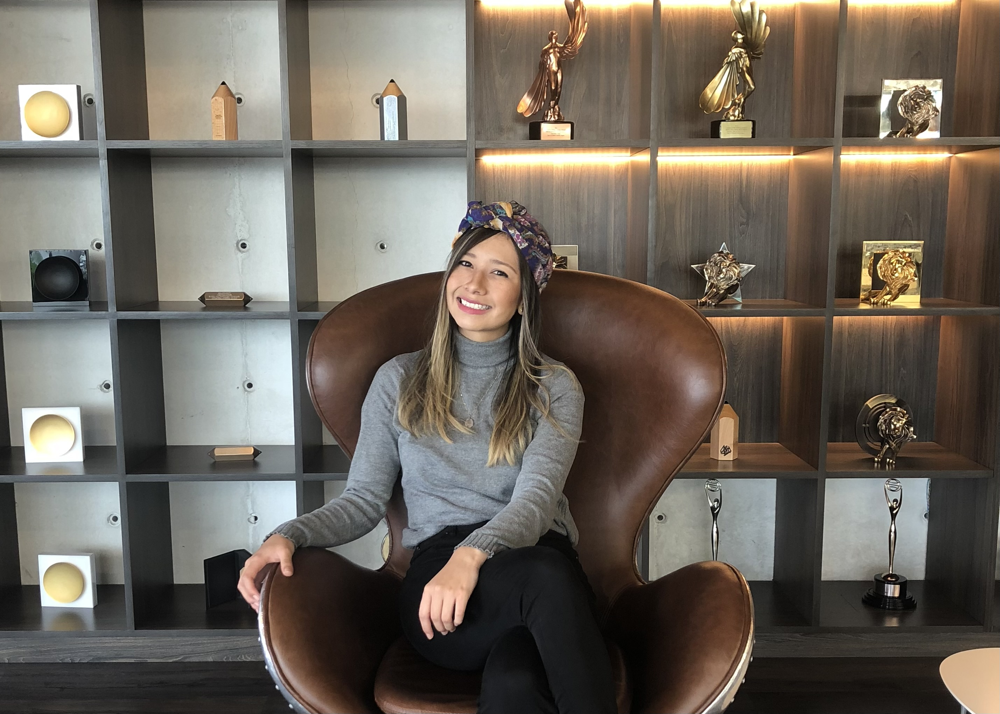
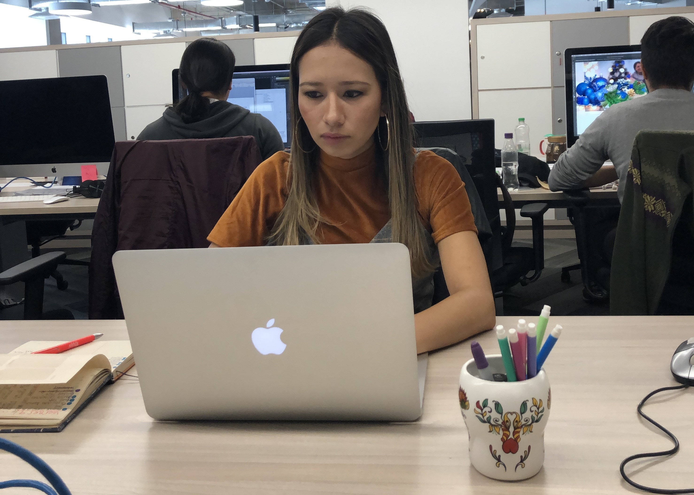
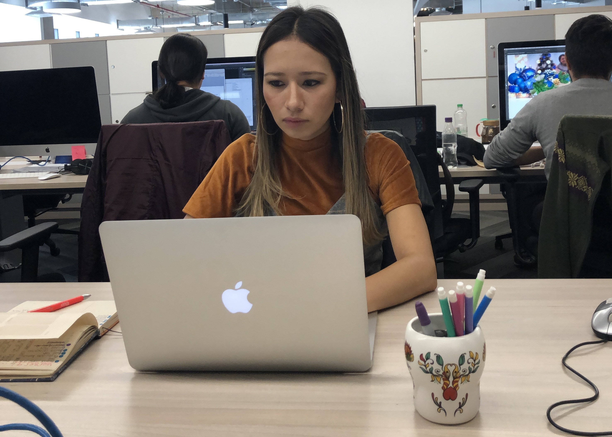

Giovanna Lamadrid
Becoming a Front-end Developer

Hi 🤝🏼 I am Gio Lamadrid, a Digital Marekting Specialist based in Berlin, who has taken interest in coding. My experience in the digital industry is an asset in a career as a front-end developer, as I have a strong understanding of user experience and how to effectively communicate with clients and stakeholders. I can also use my skills in analytics to improve the development work.
I am enthusiast for
-
Digital Industry
- SEM | Meta Ads
- eCommerce
- Websites
-
Advertisement
- Strategy
- Team Work
- Data Analysis
-
Languages
- Spanish
- English
- German
-
Well-being
- Family
- Yoga
- Culture

 

I have led projects for:
I have collaborated with demanding brands, which have shaped my character as a natural leader, determined and creative professional with the ability to build long-term relationships and new networks.